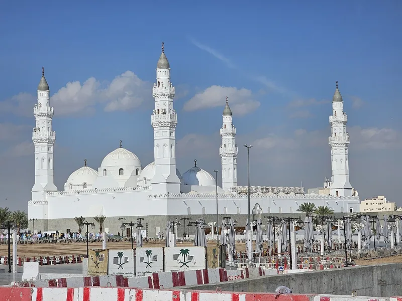
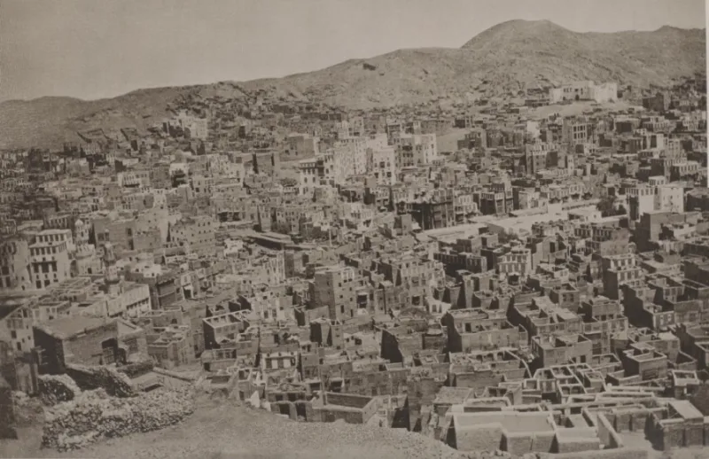
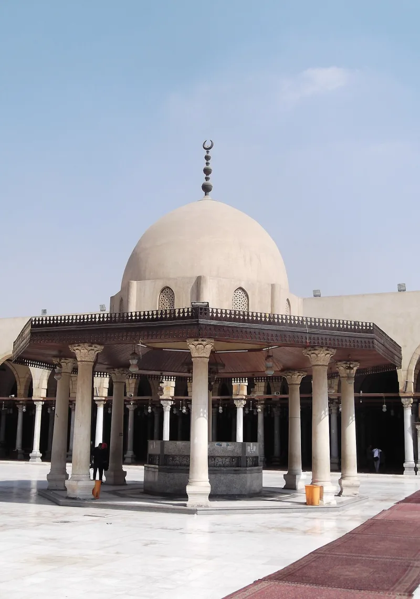

The Muslim answer holds up. Do not lead with this one.
That the earliest mosques face Petra rather than Mecca. On that view Islam's holy city was originally Petra, the tradition moved it, and the whole origin story is invented.
It comes from Dan Gibson's Early Islamic Qiblas.
David A. King is the leading historian of how the qibla was worked out.
He showed the method is anachronistic. Early mosque builders had no way to take bearings across a curved earth.
They lined up mosques by folk astronomy — sunrise and sunset at the solstice, the rising of stars. That is why the directions scatter.
Reading modern bearings back into 7th-century building manufactures the Petra alignment.
Not Muslim apologists. King's papers are titled From Petra back to Makka and The Petra Fallacy.
No academic historian of early Islam has adopted the thesis, including the sceptical revisionists that critics quote elsewhere.
Lean on Gibson and a prepared friend answers with King. Then your standards of evidence are gone.
You will have used the Western academy for Sanaa and the qira'at, and ignored it here.
Nothing is lost by dropping it. The documented problems are stronger and undisputed: Uthman's burning, the companion codices, and the lateness of the sira.
"I used to hear the Petra claim. It does not hold up, so I do not use it."



Do not use this: David King showed the method reads modern skill into an old world.
The correction comes from David A. King. He is the leading historian of how the qibla, the prayer direction, was worked out. He wrote From Petra back to Makka and The Petra Fallacy.
He showed that the method reads a modern skill into an old world. The first mosque builders had no way to take bearings across a curved earth. They lined up mosques by the sky as farmers see it — sunrise and sunset at the solstice, and the rising of stars. That is why the directions scatter. Take modern bearings and read them back into seventh-century building, and you will make a line to Petra appear.
No academic historian of early Islam holds the thesis. That includes the doubters whom critics quote on other points.
Drop it: the Western scholars you rely on elsewhere reject this one.
Here is why it backfires. The thesis is turned down not by Muslim apologists but by the very Western scholars this site leans on for Sanaa and the qira'at. Lean on Gibson and a ready friend answers with King. Your whole standard of evidence goes up in smoke.
Say this instead: nothing is lost by dropping it. The problems on the record are stronger and undisputed. There is Uthman's burning, the companion codices, and how late the sira was written.